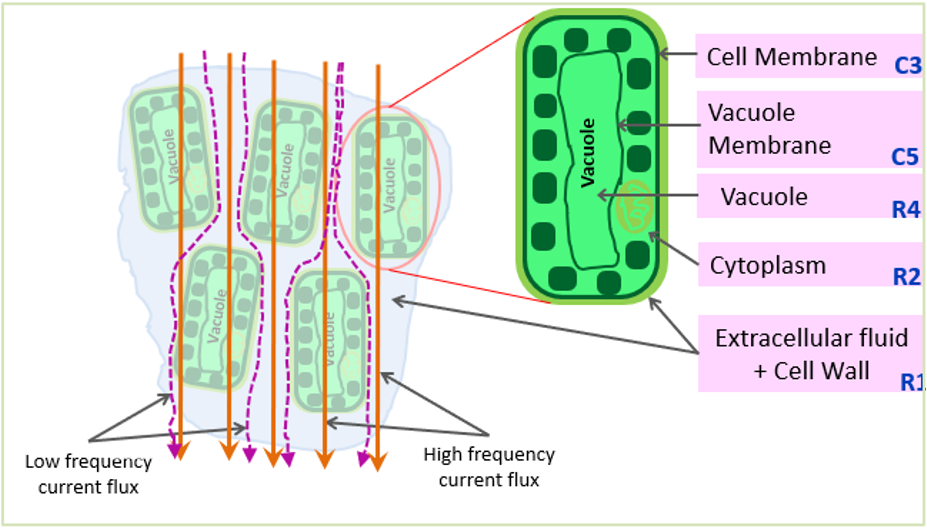
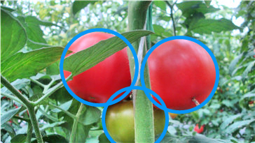
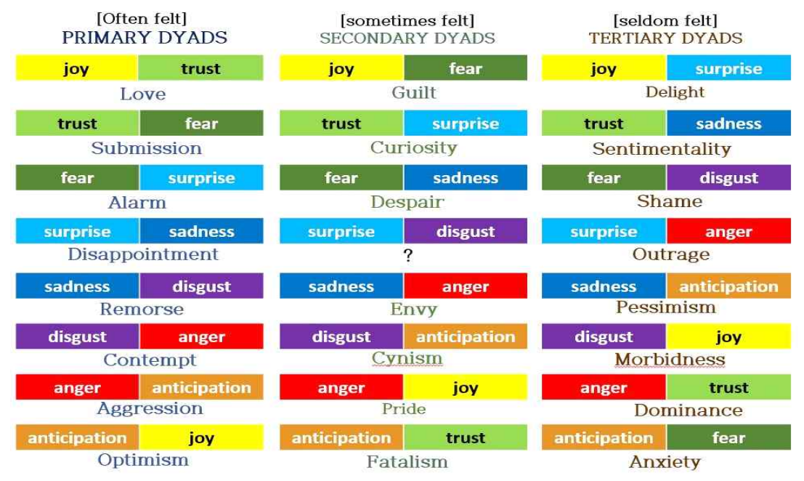
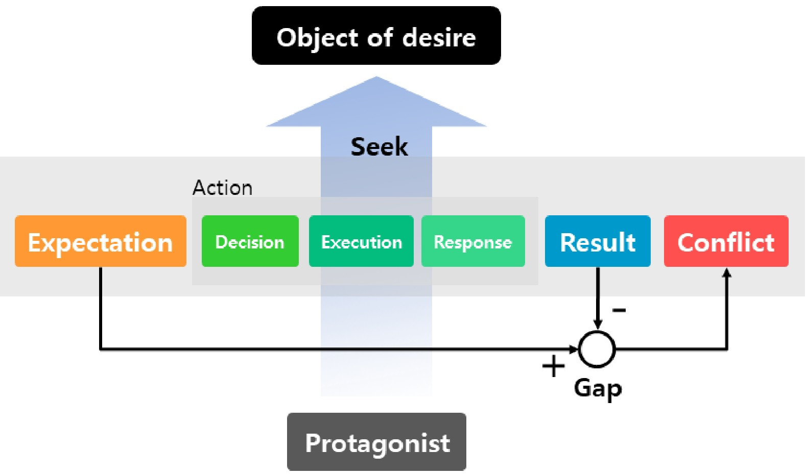
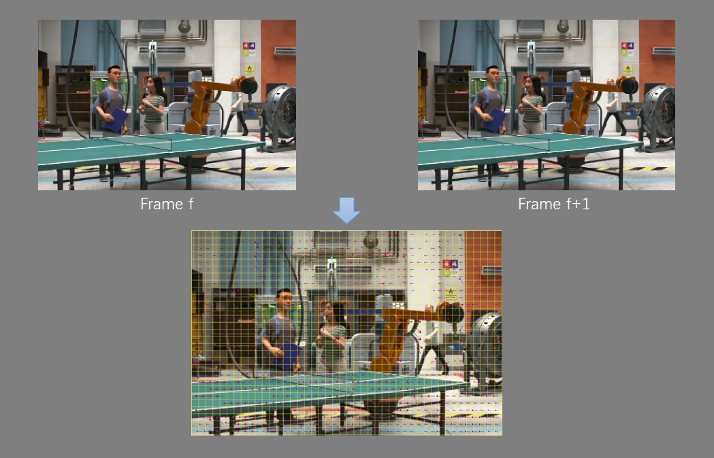
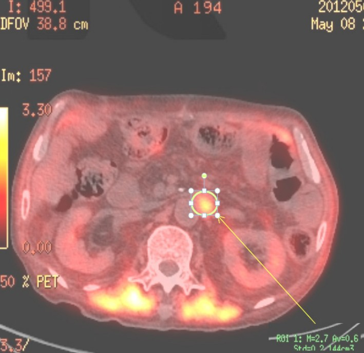

Guoxu LiuAssistant ProfessorVision and Learning Group, Weifang Key Lab of Blockchain on Agriculture Weifang University of Science and Technology Email: liuguoxu@wfust.edu.cn CV • Google Scholar |
Intro
- I am an assistant professor in Vision and Learning Group from Computer Software Institute at Weifang University of Science and Technology. I received my Ph.D degree from the Department of Electronics Engineering at Pusan National University in 2020, advised by Prof. Jae Ho Kim. Before that, I received my B.S. Degree in School of Information Science and Engineering from Shandong University in 2011 and M.S. Degree in School of Electrical and Electronic Engineering from Nanyang Technological University in 2014. My research interests include image processing, computer vision, and deep learning, etc.
News
- 2020/05: I defended my Ph.D. thesis titled Machine Vision and Deep Learning Study for Tomato Detection System.
- 2020/04: The paper "YOLO-Tomato: A Robust Algorithm for Tomato Detection based on YOLOv3" is accepted by Sensors.
- 2020/04: The paper "Bioelectrical Impedance Spectroscopy (BIS) Monitoring of Lettuce during 19 Hours" is accepted by 8th International Symposium on Sensor Science (I3S'20), which will be held in Dresden, Germany.
- 2020/01: The paper "Facial Expression Recognition of Animated Human Characters" is accepted by ICMLC'20.
All Publications
Selected Publications
2020


Bioelectrical Impedance Spectroscopy (BIS) Monitoring of Lettuce during 19 Hours.
Joseph Christian Nouaze, Philippe Lyonel Touko, Guoxu Liu, Jae Hyung Kim, Jae Ho Kim.
2020 8th International Symposium on Sensor Science (I3S 2020)
[Poster]
Joseph Christian Nouaze, Philippe Lyonel Touko, Guoxu Liu, Jae Hyung Kim, Jae Ho Kim.
2020 8th International Symposium on Sensor Science (I3S 2020)
[Poster]

Facial Expression Recognition of Animated Human Characters.
Guoxu Liu, Hui Jin, Hailong Jiang, Jae Ho Kim.
ICMLC 2020
[PDF]
Guoxu Liu, Hui Jin, Hailong Jiang, Jae Ho Kim.
ICMLC 2020
[PDF]
2019



Emotion Decision Method of A Situation-based for Emotion Study of Animation Lion King in Film.
Jong Dae Kim, Guoxu Liu, Jae Ho Kim.
The Journal of Image and Cultural Contents (KCI)
[PDF]
Jong Dae Kim, Guoxu Liu, Jae Ho Kim.
The Journal of Image and Cultural Contents (KCI)
[PDF]
2018

A multidisciplinary analysis of the main actor's conflict emotions in Animation film's Turning Point.
Tae Rin Lee, Jong Dae Kim, Guoxu Liu, Ingabire Jesse, Jae Ho Kim.
Korea Science & Art Forum (KCI)
[PDF]
Tae Rin Lee, Jong Dae Kim, Guoxu Liu, Ingabire Jesse, Jae Ho Kim.
Korea Science & Art Forum (KCI)
[PDF]
2017

Various Camera Motion Type Estimation of Animation Sequences.
Hailong Jiang, Guoxu Liu, Jae Ho Kim.
2017 Conference KMMS
[Poster]
Hailong Jiang, Guoxu Liu, Jae Ho Kim.
2017 Conference KMMS
[Poster]

Study of SUVm Cut-off Value for the Distinction of Pancreatic Cancer In PET/CT Exam.
Boseok Chang, Jae Ho Kim, Guoxu Liu, Eun Sung Jang.
The Journal of the Korea Contents Association (KCI)
[PDF]
Boseok Chang, Jae Ho Kim, Guoxu Liu, Eun Sung Jang.
The Journal of the Korea Contents Association (KCI)
[PDF]
Students
- Current undergraduate students: Jie Guo, Xiangting Jiao, Wenyan Zhao, Jie Geng, Jie Ma, Antor
Teaching
- Digital Image Processing at WFUST, 1ST Term 2020-2021
- Python Programming at WFUST, 2nd Term 2020-2021